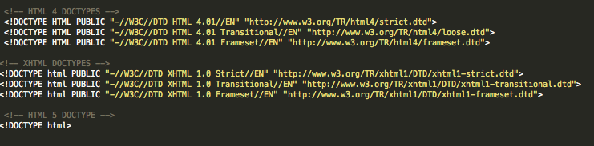

HTML Versions
Let's take a little break from coding and learn some history on HTML and different versions you can use.
The first version of HTML didn't have a version number, it was just called "HTML" and was used to put up simple Web pages back in 1989 - 1995. In 1995, the IETF (Internet Engineering Task Force) standardized HTML and numbered it "HTML 2.0". In 1997, the World Wide Web Consortium (W3C) presented the next version of HTML, HTML 3.2. It was folllowed by HTML 4.0 in 1998 and 4.01 in 1999. Then the W3C announced that it would not be creating new versions of HTML, and would begin to focus on extensible HTML or XHTML. They recommend Web designers use HTML 4.01 for their HTML documents. In 2004, the Web Hypertext Application Technology Working Group (WHATWG) began working on a new version of HTML that is not as strict as XHTML called HTML5. They hope that this will eventually be accepted as a W3C recommendation.
Now there are 7 different versions of HTML that have been created. Some versions of HTML are more forgiving on beginners and speedier to download, and some are more complex and can be used for different programming other than webpages and can be used on many different software applications. For these lessons we will be using the latest: HTML 5. Look at how pretty the HTML 5 tag is compared to the other ones! Phew, we don't have to type all of that anymore! We should all be grateful for HTML 5!
